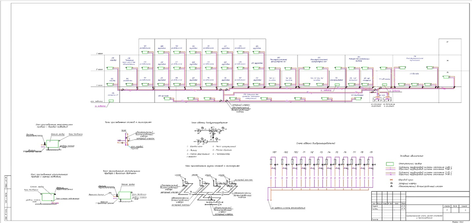

Расчет теплопотерь и воздухообмена (СП 60.13330.2020)

Цель и задачи систем ОВиК
Системы отопления, вентиляции и кондиционирования воздуха (ОВиК) представляют собой комплекс инженерных решений, предназначенных для создания и автоматического поддержания в помещениях нормируемых параметров микроклимата: температуры, влажности, чистоты и скорости движения воздуха.
Эффективная работа систем ОВиК базируется на точном определении двух ключевых исходных параметров:
- Теплопотери – количество тепловой энергии, которое необходимо постоянно подводить к помещению для компенсации её утечек в холодный период года.
- Воздухообмен – объем наружного воздуха, который необходимо подать в помещение и удалить из него в единицу времени для обеспечения санитарно-гигиенических и технологических требований.
Расчет этих параметров является обязательной первой стадией проектирования, определяющей мощность и производительность всего последующего оборудования.
Теплопотери и воздухообмен
Теплопотери (Q, Вт или кВт)
Теплопотери – это мощность теплового потока, теряемого помещением. Основные составляющие:
- Трансмиссионные: Через ограждающие конструкции (стены, окна, двери, покрытия, полы).
- На инфильтрацию: Затраты на нагрев наружного воздуха, проникающего через неплотности. Например, через неплотности в стенах.
- На вентиляцию: Затраты на нагрев организованно подаваемого приточного воздуха.
Практический вывод: Суммарная величина теплопотерь здания определяет необходимую тепловую мощность источника тепла (котельной, ИТП), а теплопотери каждого помещения - мощность местных отопительных приборов.
Воздухообмен (L, м³/ч)
Воздухообмен – процесс замещения внутреннего воздуха наружным. Определяется по:
- Кратности (для некоторых типов помещений).
- Удельным нормам притока на человека (например, 30 м³/ч в жилье, 60 м³/ч в офисе).
- Необходимости удаления вредностей (влаги, тепла, газов).
Практический вывод: расчетный воздухообмен определяет производительность вентиляционного оборудования (установок, вентиляторов), сечения воздуховодов и типоразмеры воздухораспределительных устройств.
Взаимосвязь исходных данных и проектных решений:
Теплопотери → Мощность системы отопления.
Воздухообмен → Производительность системы вентиляции.
Виды систем отопления и принципы их выбора
Система отопления предназначена для компенсации теплопотерь и поддержания в помещениях нормируемой температуры в холодный период.
| Вид системы | Принцип действия и состав | Преимущества | Недостатки / Ограничения | Типовое применение |
| Водяное (самое распространённое) | Теплоноситель (вода, антифриз) нагревается в котле/ИТП и циркулирует по трубопроводам к отопительным приборам. | Высокая теплоемкость, безопасность, возможность централизованного управления, комфортный нагрев. | Сложный монтаж, риск протечек и замерзания, инерционность. | Подавляющее большинство жилых, общественных и промышленных зданий. |
| Воздушное | Воздух нагревается в теплогенераторе (калорифере) и по воздуховодам подаётся в помещения. | Быстрый нагрев, совмещение с вентиляцией, нет радиаторов и труб с жидкостью. | Большие сечения воздуховодов, шум, сложность зонирования. | Промышленные здания, крупные торговые центры, здания с совмещённой системой ОВК. |
| Электрическое (прямое) | Электроэнергия преобразуется в тепло непосредственно в помещении (конвекторы, ИК-обогреватели, греющий кабель). | Простой монтаж, дешёвое оборудование, точное регулирование. | Высокая стоимость электроэнергии, нагрузка на сеть. | Временные объекты, отдельные помещения, дополнение к основной системе, дома без газа. |
| Лучистое (панельное) | Нагретые поверхности (потолок, пол, стены) передают тепло через инфракрасное излучение. | Высокий тепловой комфорт, нет конвективных потоков пыли, экономия пространства. | Высокая инерционность, сложность ремонта, ограничение по температуре поверхности. | Спортивные залы, производственные цеха с высокими потолками, элитное жильё. |

Основные элементы водяной системы
- Источник тепла: Котел (газовый, электрический, твердотопливный) или теплообменник, подключённый к центральной сети (ИТП).
- Теплопроводы: Трубопроводы для транспортировки теплоносителя (подающий и обратный).
- Отопительные приборы: Радиаторы (секционные, панельные), конвекторы (настенные, внутрипольные), регистры.
- Циркуляционное оборудование: Насосы, обеспечивающие движение теплоносителя.
- Запорно-регулирующая арматура и средства автоматизации: Краны, клапаны, термостаты, контроллеры.
Критерии выбора: Наличие и вид топлива/энергоресурса, этажность и архитектура здания, требования к дизайну, бюджет, требования к управлению.
Виды систем вентиляции и принципы их организации
Система вентиляции обеспечивает нормативный воздухообмен, удаляя загрязненный воздух и подавая очищенный наружный.
| Вид системы | Принцип действия | Преимущества | Недостатки | Применение |
| Естественная | Перемещение воздуха за счёт разности плотностей (температур) и ветрового давления. | Энергонезависимость, простота, дешевизна. | Зависимость от погоды, малая производительность, невозможность глубокой обработки воздуха. | Жилые здания (историческая застройка), как вытяжка в зданиях с механическим притоком. |
| Механическая (искусственная) | Перемещение воздуха с помощью вентиляторов. | Стабильность работы, возможность очистки, нагрева, охлаждения, увлажнения воздуха. | Затраты на электроэнергию, стоимость оборудования и монтажа, шум. | Подавляющее большинство современных зданий. |
| Вид системы | Описание и состав | Схема организации |
| Приточная | Подаёт обработанный (очищенный, нагретый) воздух в помещения. Состав: воздухозаборное устройство, фильтр, калорифер, вентилятор, шумоглушитель, воздуховоды, приточные решётки. | Приток механический → Вытяжка естественная. |
| Вытяжная | Удаляет загрязнённый воздух из помещений. Состав: вытяжные решётки, воздуховоды, вентилятор(ы), иногда фильтр. | Приток естественный (через клапаны) → Вытяжка механическая. |
| Приточно-вытяжная | Полноценный организованный воздухообмен. Две независимые сети или одна установка с двумя вентиляторами. | Сбалансированный механический приток и вытяжка. |
| Приточно-вытяжная с рекуперацией | Включает теплообменник-рекуператор, передающий тепло от удаляемого воздуха приточному. | Позволяет экономить до 90% энергии на нагрев притока. Обязательна для новых общественных зданий по СП. |
| Местная | Обеспечивает воздухообмен в конкретной зоне (вытяжной зонт над плитой, местный приток к рабочему месту). | Используется как дополнение к общеобменной системе. |
Для общественных и административно-бытовых помещений, где расчетная температура наружного воздуха минус 40 °C и ниже (по параметрам Б) следует предусматривать механическую вентиляцию. (п. 7.1.6).
Виды систем кондиционирования и холодоснабжения
Система кондиционирования обеспечивает поддержание заданных параметров температуры и влажности воздуха в тёплый период года, а иногда и круглогодично.
| Вид системы | Описание и состав | Преимущества | Недостатки | Применение |
| Сплит- и мульти-сплит системы | Наружный блок (компрессорно-конденсаторный) и один или несколько внутренних блоков (испарительных), соединённых фреонопроводами. | Индивидуальное управление по помещениям, относительно невысокая стоимость, простой монтаж. | Ограниченная длина трасс, внешние блоки на фасаде, только охлаждение/нагрев воздуха. | Квартиры, офисы, небольшие магазины, отдельные кабинеты. |
| Системы VRF/VRV | Развитие мульти-сплит систем. Один наружный блок большой мощности обслуживает десятки внутренних с переменным расходом хладагента. | Высокая энергоэффективность, большая длина трасс, централизованное управление, возможность одновременного нагрева и охлаждения разных помещений. | Высокая стоимость, сложность проектирования и монтажа. | Крупные офисные центры, гостиницы, административные здания. |
| Системы на основе чиллера и фанкойлов | Центральная холодильная машина (чиллер) охлаждает воду (или антифриз), которая по трубам подаётся к локальным теплообменникам-фанкойлам в помещениях. | Большая гибкость, неограниченная длина трасс, безопасность (вода в помещениях, а не фреон), возможность подключения к системе отопления. | Высокая инерционность, сложность системы, требуется отдельное место для чиллера и насосных станций. | Торговые центры, бизнес-центры, больницы, гостиницы. |
| Центральные системы кондиционирования | Центральный кондиционер (аналог приточной установки со встроенным охладителем) обрабатывает весь объём воздуха и раздаёт его по воздуховодам. | Высокая степень очистки и обработки воздуха, возможность увлажнения. | Нет индивидуального регулирования по помещениям, крупные воздуховоды. | Здания с единым открытым пространством (концертные залы, терминалы) или с высокими требованиями к чистоте воздуха. |
| Системы прямого охлаждения (DX) центральными кондиционерами | В центральный кондиционер встроен испаритель наружного компрессорно-конденсаторного блока. | Компактное решение для подачи охлаждённого воздуха. | Ограниченная холодопроизводительность, сложность обслуживания. | Небольшие и средние объекты с канальной разводкой. |
Дополнительное оборудование систем кондиционирования
- Фанкойлы: Внутренние блоки систем чиллер-фанкойл. Бывают кассетные (в потолке), канальные (за подвесным потолком), настенные, напольные.
- Градирни: Устройства для охлаждения воды в конденсаторе чиллера путём её разбрызгивания и обдува атмосферным воздухом.
- Крышные кондиционеры (руфтопы): Моноблочные установки, совмещающие функции вентиляции, отопления и охлаждения, размещаемые на кровле.
Интеграция систем и последовательность проектирования
Современные системы ОВиК – это не набор отдельных устройств, а взаимосвязанный комплекс:
- Сбор исходных данных (архитектура, ТУ, задание заказчика).
- Теплотехнический и воздушный расчёт (определение теплопотерь, теплопоступлений и воздухообмена).
- Выбор принципиальных схем систем отопления, вентиляции, кондиционирования и их интеграции (например, использование теплоты вытяжного воздуха для подогрева притока).
- Подбор оборудования по каталогам на основе выполненных расчётов.
- Разработка чертежей (планы, схемы, узлы).
- Координация со смежными разделами (АР, КР, ЭОМ, ВК, СС).
Проверочные карточки 2
Карточка 1

Основная цель систем ОВиК:
- Осушение воздуха в помещениях
- Увеличение скорости движения воздуха для охлаждения
- Создание и автоматическое поддержание нормируемых параметров микроклимата
- Только нагрев воздуха в холодный период
Ответ и пояснение
Ответ в исходных данных: Создание и автоматическое поддержание нормируемых параметров микроклимата
. Источник и ограничения. Проверка ответов, анимация и серверные функции недоступны в статической копии.